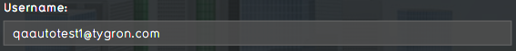
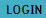
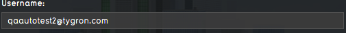
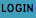
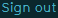
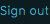

import logging;reload(logging) FORMAT="%(asctime)-8s%(message)s" logging.basicConfig(format=FORMAT, filename="testlog.log", level=logging.DEBUG) ################################################ # Log on to engine running on Windows or Linux # ################################################ if Settings.isLinux() or Settings.isWindows(): find() click() dragDrop(Pattern().targetOffset(262,8),Pattern().targetOffset(-273,10)) type(Key.DELETE) paste("qaautotest2@tygron.com") type(Key.TAB) paste("autotest2qa") click() ###################################### # Log on to engine running on MacOSX # ###################################### elif Settings.isMac(): find(Pattern().similar(0.60)) dragDrop(Pattern().similar(0.60).targetOffset(247,9),Pattern().similar(0.60).targetOffset(-248,6)) type(Key.BACKSPACE) type("qaautotest2@tygron.com") type(Key.TAB) type("autotest2qa") click() ############################## # Exit when unable to log on # ############################## else: print "[error] Unable to log on!" logging.error("[error] Unable to log on!") exit(1) ################################## # Check if log on is successfull # ################################## if exists(, 5): print"[success] Log on succesfull!" logging.info("[success] Log on succesfull!") elif exists(, 5): print"[success] Log on succesfull!" logging.info("[success] Log on succesfull!") else: print"[error] Log on failed!" logging.error("[error] Log on failed!") exit(1)